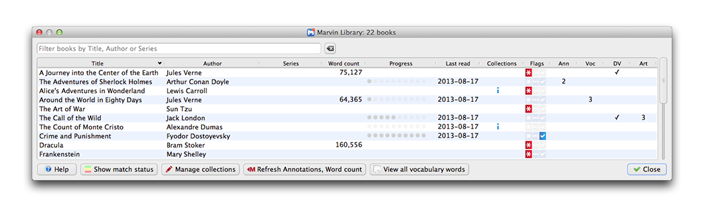
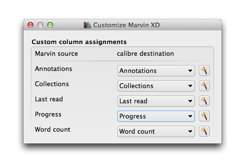
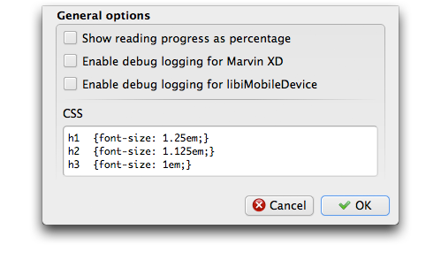

Marvin XD is an extended driver, offering remote management of your Marvin library.

Features:
Click the down arrow next to the Marvin XD icon , then Customize plugin to display the Customize Marvin XD dialog.
Custom columns
The Custom columns section connects Marvin XD columns with calibre custom columns. For example, you can select a custom column in calibre for Collections, which then allows you to synchronize collection assignments between calibre and Marvin. You may also specify custom columns for Last read, Annotations and Progress, enabling you to save those Marvin details in calibre.
Clicking the combo box presents a list of existing custom columns eligible for use with the associated Marvin details.
Clicking the Wizard button creates a new custom column, or renames an existing custom column.
General options
The General options section blah blah blah.
Click to list books installed in Marvin with a background color representing their status.
Click to return to the regular display listing.
| Color | in calibre library | Match status |
| White | Installed in Marvin, but not your calibre library | |
| Red | Duplicate copies installed in Marvin | |
| Green | ✓ | Installed in calibre and Marvin, all metadata matches |
| Yellow | ✓ | Some metadata differences between calibre and Marvin |
| Orange | ✓ | Duplicate copy of a matched (green or yellow) book |
Actions are initiated by double-clicking a cell, selecting an action from a cell's context menu, or clicking a button in the main window.
Usage scenarios here
For more information on Marvin XD, visit calibre's Plugins forum.